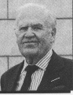
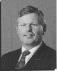

The History
At the time it was thought to be the largest venture-capital backed Greenfield manufacturing startup in British History. In 1993 one man raised over £35 million from the City of London to build a new manufacturing plant in Wales. Over the next 8 years the plant was built, started production, went into receivership three times (some say twice...), and finally was shut down for the final time.
We lived through the madness, and thought that we should commit our memories to a web page, for posterity. If you invested in Tech Board, supplied equipment to Tech Board, or even worked for Tech Board, we hope you’ll find something that brings back a happy (?) memory.
Regards,
Guy & Pierre
Imperial Road — The Madness Starts
Malcolm had found his latest backer in the form of one Peter Learmond, a man who had made his millions through creating a company called Sheerness Steel.

Learmond, who often called himself "Commander", although we were never quite sure whether he left the "Lieutenant" part off the front by accident or on purpose, owned a converted tram-shed in Imperial Road, London.
Learmond was a strange character... there’s so many stories that one could tell about the time in Imperial Road. Quite often he would shout things at the top of his voice, expecting everybody to drop what they were doing and answer him. One of his favorites was "WHAT’S THE TIME?". After a few months of this, Malcolm bought him a big clock, and placed it in the middle of his desk... but he would still shout "WHAT’S THE TIME?", to which Malcolm would just go into his office and point at the clock.
He would quite often shout out quite bizarre questions: "WHO’S LORD KING’S SECRETARY?". By this time the new Hardboard Mill had been given the name "Tech-Board" for some while, yet one day he was heard to shout "WHO’S TECH-BOARD?"... lots of coughing ensued.
Ongoing Sagas
There seemed to be a lot of ongoing sagas at Imperial Road. Learmond owned an Aston Martin that was forever getting sent to a "specialist" in Wales... lots of irate telephone calls later, and it would arrive back on a transporter, only to be shipped back down to Wales again the following week with outstanding problems.
When it was back in London though, it was always funny watching it pull away... there would be no traffic coming for ages, then, just as a car was upon us, it would pull away... every time!
There was also the saga of the nighties. Learmond’s daughter used to work for a nightie company, then set up on her own. So we had about 6 months of bizarre phone calls to Malaysia, where her first consignment of nighties were being made, lots of excitement when they arrived, followed by weeks of angst when they found out that the company that they originally worked for were suing them for allegedly ripping off the designs.
The Mill Presentations
During this time there was lots of meetings with potential suppliers and potential backers. Every day would see a presentation to some financial institution or other, and a presentation from some manufacturer of presses or saws or process control.
These seemed to all blur into one, except when we were getting a visit from a man we christened "Arne Rhinohorn". Arne worked for a Scandinavian machine manufacturer, a lovely man, but a very big man, with a bit of a BO problem. We always pondered about his evening return journey in a cramped little aircraft seat and felt sorry for the person sitting next to him. One day we were horrified to see him get out of a Nissan Micra: "Ah hello, I caught an early flight, so I thought I’d see a few sites of London before our meeting". It was one of the hottest days of the year. The car didn’t have A/C. It was a very short meeting.
The Key Figures
A few prominent names recorded during the formative Imperial Road and Wales transition periods:

For all of the time at Imperial Road, Tony Read had been "on board" as TechBoard’s Financial Director. Tony remained remarkably jolly throughout and moved to Wales to live through the first years of the plant.
Austin re-appeared during the last few months at Imperial Road and moved down to Wales. This was despite him visiting the area where the mill was to be built several weeks before the deal was finalized, returning to report that the location was "Like Beirut".
Very, Very Welsh, Ted appeared during the final couple of months at Imperial Road and managed plant personnel setups during the opening years.
Additional Operational Staff Notes:
- Alan the Chauffeur: Very Mad.
- Sandie Coward: Learmond’s secretary who put up with a lot!
- Brenda Fyson: Secretary for TechBoard and alternative businesses inside the London offices.
Into Operation
After the opening we had a very important quality test – the mill had to run for 24 hours and produce so much hardboard of a certain (non-wavy) quality. On completion of this test the banks would release a whole chunk of money to allow Tech Board to trade until they started making a profit.
So, if the plant passed the quality test, the company would continue. If it failed the quality test, there would be no more money and it would have to close. So, did it pass? Of course it did. In all the time up to the quality test the board was wavy, but in a miraculous 24 hours it all came together – the quantity and quality of the board was perfect.
It was just really really unfortunate that the moment the quality test was complete, the board went back to being wavy and bits of plant started to break down again.
Over the first 12-15 months we were down most of the time. The engineers never left the building, especially Mike Thomas!! Production teams were always cleaning up one mess after another. Money was being spent like water and Malcolm was under increasing pressure.
Colin (the bloke who bought the wood... and... well that was it?) walked his dog and spent time in the forests with his suppliers. The Quality of the board at this time was not good. We ended up selling it to somewhere in Spain—which we all found strange considering the whole point of being the only manufacturer based in the UK was to supply the domestic UK market.
During this era, Malcolm stepped down as MD and was replaced by George Anderson. Malcy had always noted it was unusual for MDs who kickstart these massive schemes to last more than 18 months. Still, it remains a staggering historic achievement of individual venture-backed funding.
...And The Gates Close
One afternoon everyone was called out to the carpark. A list of names was read out and that group of people were asked to go and stand on their own. The remaining group were then told that they no longer had a job. The mill had gone into receivership suddenly—the banks pulled out overnight. The original startup backing had been provided principally by Commander Learmond & 3i.
As George Anderson left the site, he promised he would return... and he did, alongside Enron.
George then planned the start of the new Tech-Board framework. Peter Evans (Purchasing Manager) had his office located right inside the kitchen, engineering utility and wood deals from there. Unfortunately, Enron spent a massive amount of capital and got nowhere. Production lines failed and failed again.
Controlled Closure
When the second structural end arrived, closure rather than sudden receivership beckoned. Enron did honor all outstanding debts in a controlled wind-down. The reality was that Enron wanted Tech-Board because it could utilize the land behind the plant to construct a gas-fired power station. This plan operated flawlessly until the British government issued a sudden policy moratorium stating that no more power stations of this variant were to be built.
The Rumour Mill & Political Connections
Enron Connections: When Enron collapsed, it hit global news—but locally, we noted that the former chairman of Enron Europe was also the old chairman of Tech-Board: Mr. Ralph Hodge.
"Enron's top man in Europe, Ralph Hodge, was awarded a CBE. Outlines showed intentions to utilize channels to challenge support for energy construction restrictions before policy frameworks shifted."
— Contemporary Industrial Review Fragments
Historical Plant Tracking Notes (Late 2001)
Power Station Disputes: Local Rassau tenants and residents associations registered heavy objections with the Department of Trade and Industry regarding the industrial zoning modifications planned behind the site since 1998.
International Buyout Inquiries: During the final operational gaps, multiple foreign consortiums reviewed the Ebbw Vale plant infrastructure—including competitive analytical inquiries arriving from industrial groups located in Russia and Australia.